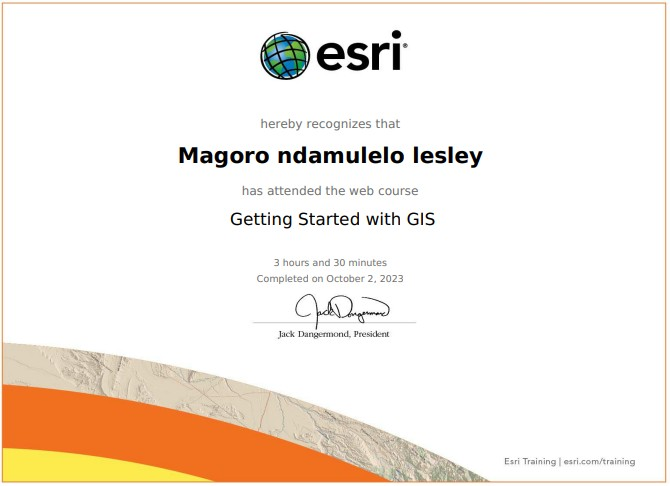
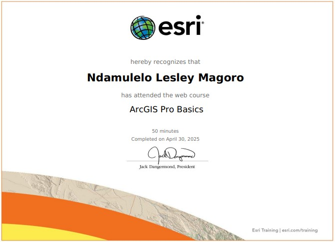
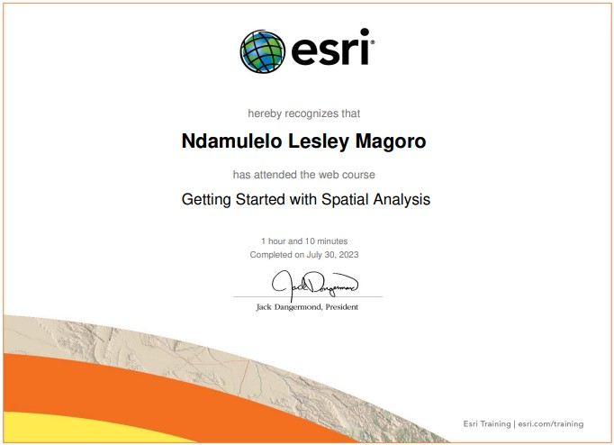
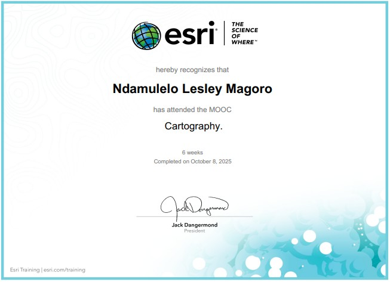
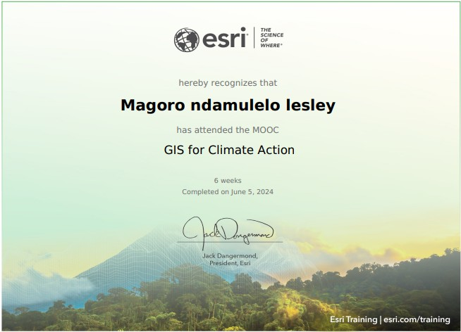
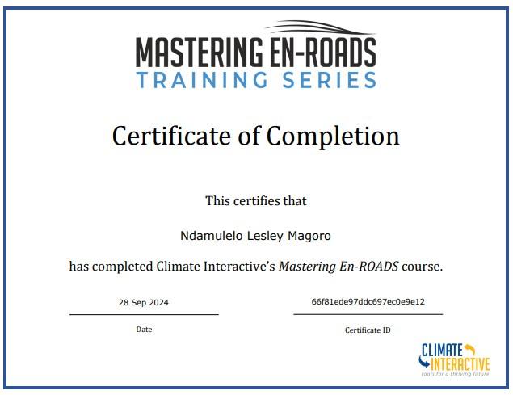
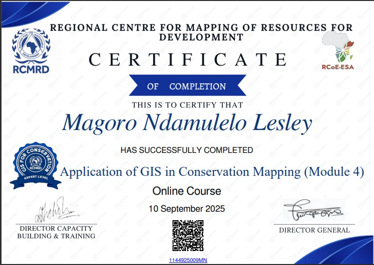
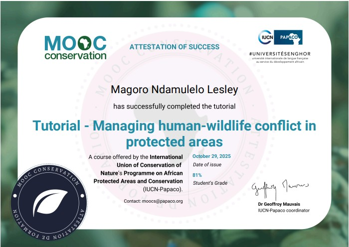
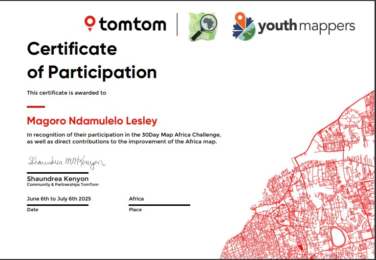
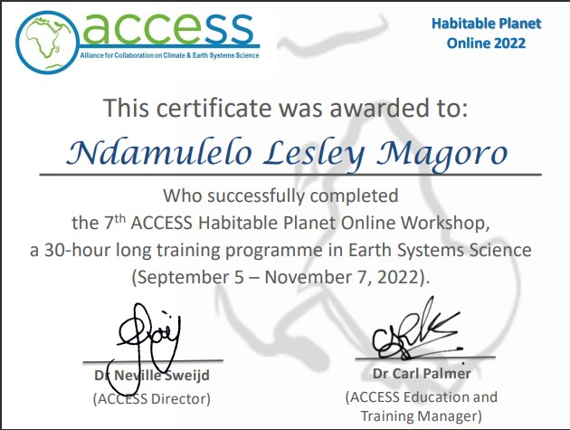

National Water Week: Johannesburg Zoo
(19 March 2026)
GIS & Environmental Analyst | Environmental Resource Management Graduate
I am currently SEEKING opportunities in GIS, environmental management, spatial analysis, and environmental consulting where I can contribute technical GIS expertise and environmental knowledge to support sustainable development.

My objective is to build a professional career in GIS and environmental management where I can apply spatial analysis, remote sensing, and environmental planning skills to support sustainable development and environmental protection.
(19 March 2026)

This course introduced the fundamental concepts of Geographic Information Systems (GIS), including spatial data types, basic mapping techniques, and spatial analysis. It covered how GIS is used to collect, manage, analyze, and visualize geographic data to support decision-making. The training also provided practical understanding of GIS applications in environmental management, land use planning, and sustainability

This course provided foundational skills in using ArcGIS Pro for spatial data management, visualization, and analysis. It included working with maps and layers, editing spatial data, creating layouts, and performing basic spatial analysis. The course strengthened practical GIS skills for environmental analysis, mapping, and data-driven decision-making.

This course provided an introduction to spatial analysis techniques used to examine geographic patterns, relationships, and trends. It covered fundamental concepts such as overlay analysis, buffering, proximity analysis, and data interpretation to support problem-solving and decision-making. The course also demonstrated how spatial analysis can be applied in environmental management, resource planning, and GIS-based research.

This course focuses on the principles of map design and visualization, teaching how to create clear, acurate, and visually effective maps for communication and decision-making. The course emphasizes the importance of good cartographic design in presenting spatial data professionally

This course focuses on the integration of spatial analysis, data science, and GIS to address complex environmental, social, and economic problems. It emphasizes using spatial data to uncover patterns, make predictions, and support data-driven decision-making.

This course explores how Geographic Information Systems (GIS) can be applied to understand, monitor, and mitigate climate change impacts. It combines spatial analysis with real-world climate data to support decision-making and climate action strategies.

This workshop provided hands-on experience with the EN-ROADS climate simulator, exploring the effects of energy, emissions, and policy decisions on global temperature outcomes. It enhanced understanding of climate change mitigation, sustainability strategies, and systems-based approaches to environmental decision-making.

This professional training focused on the application of Geographic Information Systems (GIS) in biodiversity conservation, habitat monitoring, and protected area management. The course provided practical experience in spatial data analysis, conservation planning, and the use of GIS tools for environmental decision-making.

focused on strategies to prevent and mitigate conflicts between humans and wildlife. It covered the identification of conflict types, risk assessment methods, and the design of intervention strategies. The course emphasized stakeholder engagement, community participation, and the use of conservation best practices to balance wildlife protection with human livelihoods, while promoting sustainable and safe coexistence in protected areas.

Volunteers mapping initiative aimed at improving the availability and accuracy of geographic data across African regions. Participants contributed by creating, editing, and validating digital maps using OpenStreetMap and other GIS tools. The challenge focused on mapping infrastructure, natural features, and community assets to support disaster response, development planning, and conservation efforts. Through daily mapping tasks, I enhanced my practical GIS skills, spatial data accuracy, and understanding of collaborative mapping for sustainable development.

The workshop covered topics such as the structure and composition of the Earth, climate systems, biogeochemical cycles, water and energy balance, and the interactions between physical, chemical, and biological processes that sustain life. Participants explored methods for assessing environmental health, interpreting geospatial data, and applying Earth science concepts to real-world sustainability and resource management challenges.